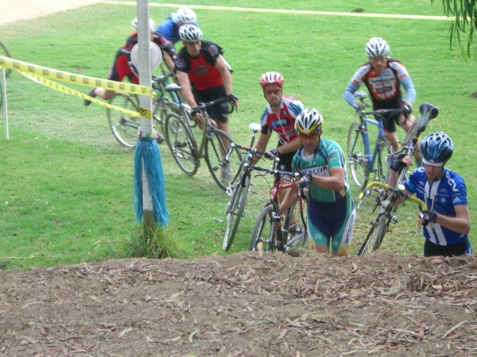
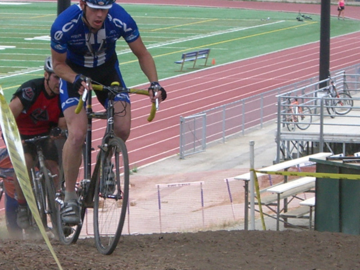
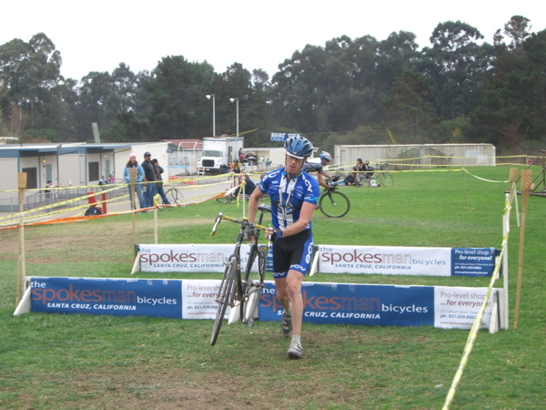

This is it--the first of three races in the Surf City series. I've shimmed up the cleats on my pedals to make unclipping easier after the fiasco at Fort Ord two weeks ago, and I'm just coming off a rest week, so I'm hoping for a great result today.
I drive down with an old Cal Cycling buddy, Dan Adkins, and we get there in plenty of time to survey the course. It's about the same length as the one at Fort Ord, but less technical. There's only one set of barriers, and there are far fewer loose turns. There are also plenty of long, straight stretches where I can use fitness to make up for my poor handling skills.
After the standard Mat Glaser crit warmup and a pit stop, Dan and I head to the line, where we find a much larger crowd than at Fort Ord. There are fifty of us in the Men's B's and a dozen juniors who will start thirty seconds behind us. The course starts on a nasty gravel section, and it's going to be a mad dash from the whistle to see who claims the single line that has been worn clean during the preceding races. Luckily, I score a spot in the front row.
The goal in a cyclocross start is to go hard enough not to get caught up in the mass of the pack, where you'll end up waiting in line as the group slows for each obstacle. At the same time, you don't want to go any harder than necessary, since you'll be racing for forty-five minutes, and keeping a relatively even pace is essential. Luck smiles on me today, as I manage to find third wheel heading into the gravel; just fast enough to have freedom of movement, but letting someone else set the pace.
After the gravel opens up we have a loose right hand turn through several inches of dust, a sweeping left across a bumpy grass field, and then an S-turn over grass before the only set of barriers on the course. Coming off the barriers I get back on my bike more quickly than the rest, and I pull into first place long enough to lead the charge up the first run-up.
Shortly thereafter, there's a sweeping downhill left into a dusty uphill. Dan and I decided before the race that while we could ride this section, it would probably be faster to run it. I do so, but two guys ride past me in the process. I decide to ride it on the next lap.
From there, the course circles around a tennis court and up another short run-up, then crosses a long, slightly downhill section where I draft the two who've just passed me. Then we take a right turn through a small ditch, a left onto a fast, super-loose chute about twenty feet tall, circle a playing field of some kind, and then do a huge twenty-foot tall run-up which leaves the legs screaming. From there it's an easy downhill onto a long pavement stretch that passes the finish then loops around some school buildings and back to the starting gravel stretch.
After the first lap, I've worked up a really nice side stitch. I pretty much never get them in road cycling, but they seem to be a cyclocross staple. Still, I hold my position, sitting in third place by a bike length, and manage to ride the dusty uphill the next time through. By the beginning of the following lap, however, they're starting to pull away. It's a combination of fitness and skills. They're definitely strong, but they're also putting a second into me through every tricky section, and those seconds are adding up.
By somewhere on the third lap, I'm all alone. I see the two in front of me only when the course doubles back on itself, and there doesn't seem to be anyone close behind me. I try to settle into a rhythm, but it's hard to do without an obvious rabbit to chase. Sure enough, around a lap later two more guys catch me as we cross the barriers. This pisses me off, as I've just fallen to fifth place.
At the same time, these guys have mad handling skills. Coming up to the downhill chute right after they pass me, I watch one of them go into a two-wheel slide at fifteen miles per hour before dropping into the chute in a cloud of dust. It doesn't take too many such moves before they, too, are only seen when the course doubles back.
When two more guys ride up on my tail after the next time through the barriers, I start having visions of being slowly passed by everyone else in the race, two by two, until time runs out, and this image rekindles my motivation to hurt. I hammer the run-up and dusty uphill that follow, pound the fast open section, and scare myself shitless as I bomb down the chute with reckless abandon. It seems to work, as one of them drops out of sight.
The other one, however, has more fight in him, and despite my hard attack entering the pavement section, he manages to draft me all the way around the school and back to the finish. When he's still there on the next lap, I wave him through and take a draft myself as we pass the bell-ringer indicating we have only a lap to go. Then, as we come into a turn on the back side, he nearly misses a turn and goes into a skid as I pass him. At first, I think he's trying to trick me into pulling the rest of the way, so I attack hard, but when I look back it's clear that he's flustered.
I dig deep and hammer, hoping to take advantage. Once more through the gravel, the barriers, the run-ups, and down the chute. Coming into the pavement I'm ready for the sprint, and I hit the turn onto the finishing straight sure that he's right on my wheel. There's no space for strategy, so I just dig in and pound the pedals, but when I look backwards under my elbow he's nowhere to be seen. I sit up and enjoy coasting across the line before collapsing into a fit of coughing just past it.
Twenty minutes later, when the results are posted, we learn that one of the guys who passed me was a junior (starting thirty seconds back!), so my actual placing was fourth of fifty. It isn't first place, but I beat the guy who won Fort Ord by almost a minute and a half, enacting revenge for two weeks ago. Dan, unfortunately, was forced to drop out of the race on lap three after a nasty pinch flat. Better luck next week, man.
WWMRD,
Sean
| Third wheel in the opening gravel section. |

| Leading the charge up the first run-up. |

| Riding the dusty uphill. |

| No unclipping issues this week. |